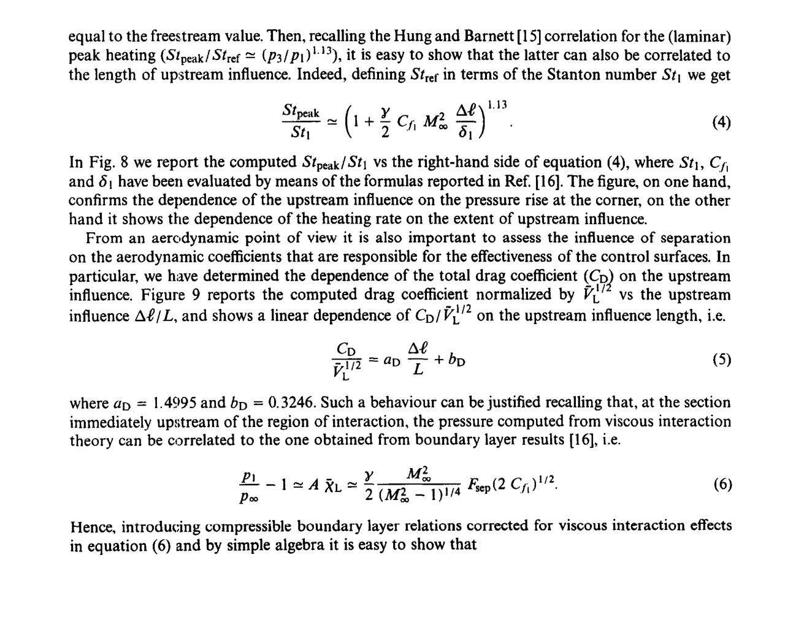
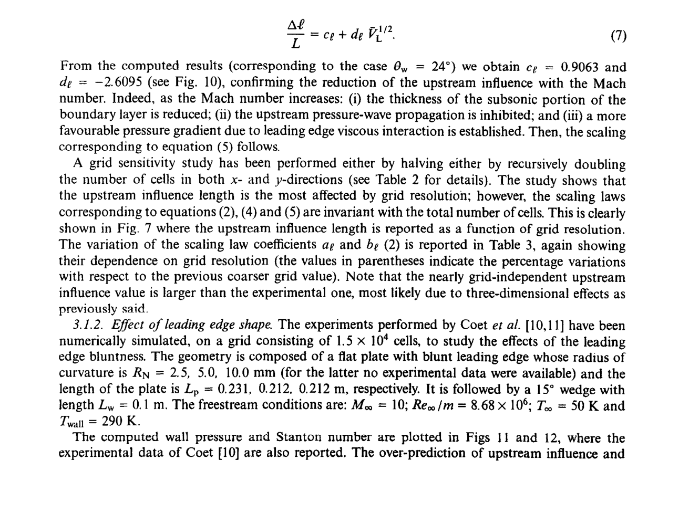
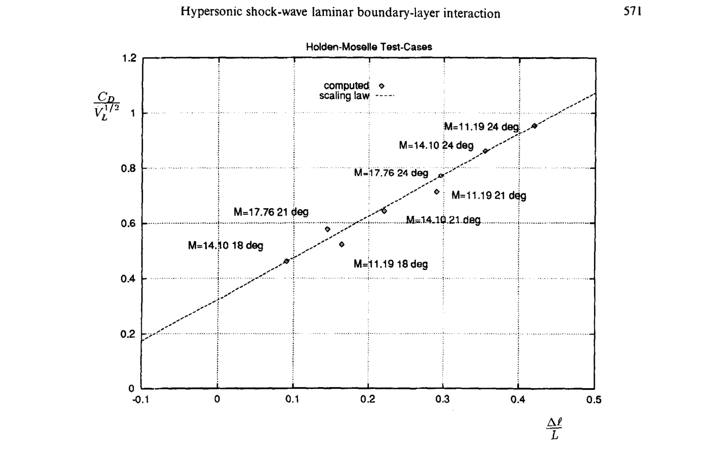
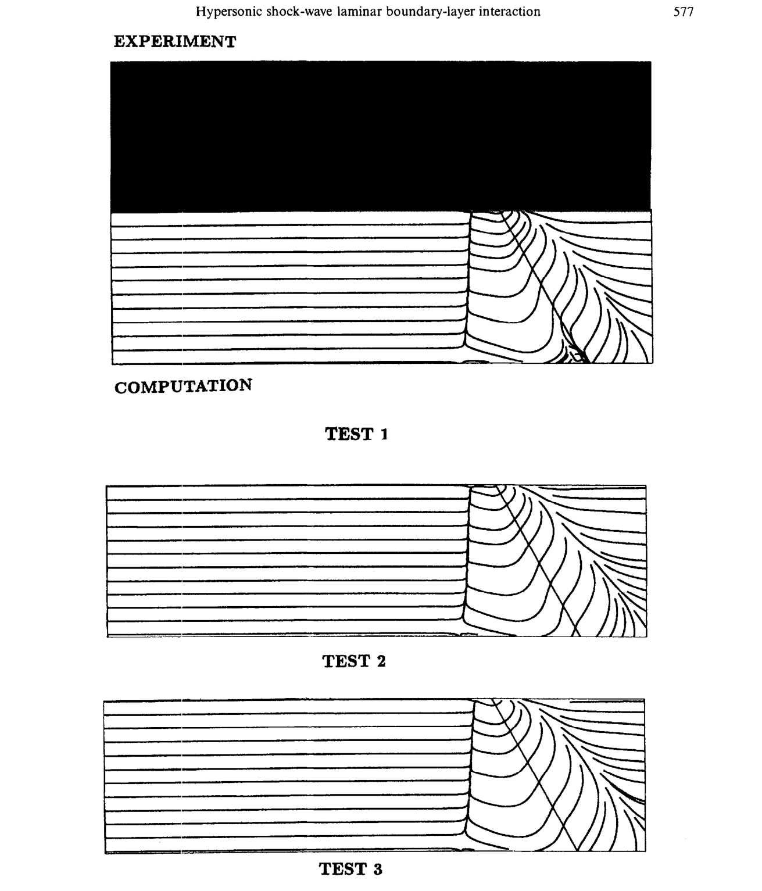

01中文摘要
分析翼-襟翼与翼-机身连接构型上由强激波-层流边界层干扰主导的高超声速粘性流动，评估控制面偏角、前缘形状和粘性干扰参数对流场的影响。通过数值模拟与理论分析建立上游影响、峰值热流和气动系数的缩放律。二维部分对应 Holden–Moselle 压缩拐角实验，三维部分为后掠压缩拐角，并讨论 Görtler 不稳定性判据。
原始摘要（英文/原文）
Irk the present paper hypersonic viscous flows dominated by strong shock-wave laminar boundary-la:yer interactions over wing-flap and wing-fuselage junction configurations have been analyzed. The effects of the control surface deflection angle, leading edge shape and viscous interaction parameter on the flowfield have been evaluated. Scaling laws for the upstream intluence. peak heating and aerodynamic coefficients have been established by means of numerical simulations and theoretical considerations. Copyright @ 1996 Elsevier ScienceLtd.
02阅读说明
数值模拟为主、辅以理论标度分析；Computers & Fluids 1996 年论文，共 21 页。材料含全文与 Fig. 2–17、Table 3–4 抓图清单，但图页 OCR 严重退化、公式多处丢失；式(2)–(11) 已回读 PDF 第 568–575 页核对，式(12)–(16) 仅有 OCR 残片（其中式15 无法辨认）。二维翼-襟翼、钝前缘与三维障碍物三类构型均有工况与结果；无实验原始数据，验证依赖 Holden–Moselle 与 Coet–Delery 的对比。 文章类型：期刊
03一句话核心与三句话摘要
M∞10–17.76 层流强干扰：上游影响随 ramp 角线性增、随 χL^1/2 减，并给出峰值热流与阻力标度律。
- 高超声速控制面与翼身干扰会产生大范围分离、局部高热流与控制效率损失，但缺乏把几何角、Mach 数、黏性干扰参数与前缘钝度统一起来的标度律。 AI概括
- 用层流全 Navier–Stokes 计算 Holden–Moselle 翼-襟翼、Coet–Delery 钝前缘与三维障碍物三类流动，发现 Δℓ/L·M∞^1/2 随 ramp 角线性增加，峰值热流随 Δℓ/δ1 的 1.13 次方增加，阻力随上游影响线性增加。 AI概括
- 钝前缘把角点干扰降为超声速干扰并使 Δℓ/L 按 R_N^(-2/3) 缩小；三维障碍物用分离面积 AS/Ls² 归一化后服从与二维相同的标度律。 原文明确
04核心内容清单
| 要点 | 类型 | 重要性 | 原文依据 | 属性 |
|---|---|---|---|---|
| 研究对象为高超声速层流强干扰：二维翼-襟翼、钝前缘平板/楔、三维翼身结合部障碍物三类构型。 | 研究范围 | A | p.561, Abstract；§3 | 原文明确 |
| 必须用全 N–S 而非抛物化 N–S，才能正确捕捉边界层亚声速层内的上游压力传播与分离。 | 数值方法依据 | A | p.563, §1 | 原文明确 |
| 二维翼-襟翼基准：M∞=14.1、Re∞/m=236200、T∞=88.88 K、Twall=297.22 K，ramp 角 15°–24°，χL=8.70，起始分离角 16.24°。 | 基准工况 | A | p.565, §3.1.1；Table 1 | 原文明确 |
| Δℓ/L·M∞^1/2 随 ramp 角近似线性增加；M∞=14.1 时 aℓ=0.1657、bℓ=-2.6457（式2，Fig. 7）。 | 核心标度律 | A | p.568, §3.1.1；式(2)；Fig. 7 | 原文明确 |
| 峰值热流按 St_peak/St1≈(1+(γ/2)C_f1 M∞² Δℓ/δ1)^1.13 与上游影响关联（式4，Fig. 8）。 | 热流标度律 | A | p.569, §3.1.1；式(4)；Fig. 8 | 原文明确 |
| 阻力系数按 χL^1/2 归一化后随 Δℓ/L 线性增加，aD=1.4995、bD=0.3246（式5，Fig. 9）。 | 气动系数标度律 | A | p.569, §3.1.1；式(5)；Fig. 9 | 原文明确 |
| 上游影响随 χL^1/2 线性减小：Δℓ/L=cℓ+dℓ χL^1/2，cℓ=0.9063、dℓ=-2.6095（式7，Fig. 10）。 | Mach/Re 标度 | A | p.570, §3.1.1；式(7)；Fig. 10 | 原文明确 |
| 钝前缘使弓形激波后 Mach 数降至约 0.4、Re 降低约 20 倍，肩部 Mach 数约 3，角点干扰转为超声速干扰，Δℓ/L 按 R_N^(-2/3) 缩小。 | 钝度机制与标度 | A | p.572–574, §3.1.2；式(8)(9)；Fig. 11–14 | 原文明确 |
| 总阻力中波阻比摩阻大约两个量级，CD 随 RN 近似线性增加（式10），组合得式(11)。 | 钝前缘阻力 | B | p.574, §3.1.2；式(10)(11)；Fig. 14 | 原文明确 |
| 三维障碍物分离区呈锥形对称，分离线近似平行前缘并随 Mach 数向障碍物移动；上游影响随后掠角减小，θw 与 ψ 同时增大时又增大。 | 三维流动结构 | A | p.575–576, §3.2；Fig. 16 | 原文明确 |
| 以分离面积 AS/Ls² 定义三维上游影响后，其随 χL^1/2 的标度与二维相同，阻力亦随 AS/Ls² 线性变化（式14、16，Fig. 17–18）。 | 三维标度律 | A | p.576–578, §3.2；式(14)(16) | 原文明确 |
| 网格只改变 Δℓ 的数值，不改变式(2)(4)(5) 的标度形式；但网格无关的 Δℓ 仍高于实验，归因于未计有限展向三维效应。 | 验证与局限 | B | p.570, §3.1.1；Table 2–3；Fig. 7 | 原文明确 |
05引言：研究问题与领域缺口
高超声速飞行器控制面（襟翼、升降副翼）及翼身结合部的激波/边界层干扰会造成大范围回流区、局部高热流和气动控制效率下降；分离位置决定激波系位置，从而影响全部气动量。二维压缩拐角的物理在定常条件下已较清楚，但工程缺少可用的标度关系。作者回顾了 Chapman 等、Hakkinen 等、Needham–Stollery、Green、Holden、Hankey–Holden、Katzer、Hayakawa–Squire、Delery、Settles 等的工作，指出上游影响随 ramp 角增大、随 Mach 数减小，并受 Reynolds 数（湍流时较弱）、前缘钝度与后掠角影响。本文目标是：用二维与三维层流全 Navier–Stokes 数值实验，系统改变控制面偏转角、后掠角、前缘半径与黏性干扰参数 χL，建立上游影响、峰值热流与气动系数的标度律，并用 Holden–Moselle 与 Coet–Delery 实验检验。
06流动条件与几何构型
| 项目 | 数值/描述 | 依据 | 备注 |
|---|---|---|---|
| Holden–Moselle 翼-襟翼基准工况 | M∞=14.10；Re∞/m=236200；T∞=88.88 K；Twall=297.22 K；平板长 Ls=0.4389 m；ramp 长 0.4389 m；θw=15°、18°、21°、24°；χL=8.70 | p.565, §3.1.1；Table 1 | |
| Holden–Moselle 低 Mach 工况 | M∞=11.19；θw=15°、18°、21°、24°；χL=4.35；其余来流条件同基准（Re∞/m=236200、T∞=88.88 K、Twall=297.22 K） | p.565, §3.1.1；Table 1 | 通过改变 Mach 数使 χL 减半 |
| Holden–Moselle 高 Mach 工况 | M∞=17.76；θw=15°、18°、21°、24°；χL=17.4；其余来流条件同基准 | p.565, §3.1.1；Table 1 | χL 相对基准加倍 |
| 起始分离角 | θis=16.24°（由 M∞θe=80χL^(-1/2) 关联式得到） | p.565, §3.1.1 | 故 15° 附着，18°、21°、24° 分离 |
| Coet–Delery 钝前缘工况 RN=2.5 mm | M∞=10；Re∞/m=8.68×10^6；T∞=50 K；Twall=290 K；RN=2.5 mm；平板长 Lp=0.231 m；15° 楔长 Lw=0.1 m | p.570, §3.1.2 | 网格约 1.5×10^4 单元 |
| Coet–Delery 钝前缘工况 RN=5.0 mm | M∞=10；Re∞/m=8.68×10^6；T∞=50 K；Twall=290 K；RN=5.0 mm；平板长 Lp=0.212 m；15° 楔长 0.1 m | p.570, §3.1.2 | |
| Coet–Delery 钝前缘工况 RN=10.0 mm | M∞=10；Re∞/m=8.68×10^6；T∞=50 K；Twall=290 K；RN=10.0 mm；平板长 Lp=0.212 m；15° 楔长 0.1 m | p.570, §3.1.2 | 该半径无实验数据 |
| 三维障碍物几何 | 平板长 0.35 m、宽 2W=0.2 m；两段并排压缩斜面，楔角 θw、对称后掠角 ψ；顶点位于对称面 X=Ls=0.25 m；取半模 W=0.1 m | p.574–575, §3.2；Fig. 15 | |
| 三维工况 1 | θw=15°；ψ=30°；M∞=10；χL=0.67 | Table 4, p.575 | |
| 三维工况 2 | θw=15°；ψ=30°；M∞=12.59；χL=1.34 | Table 4, p.575 | |
| 三维工况 3 | θw=15°；ψ=30°；M∞=15.87；χL=2.68 | Table 4, p.575 | |
| 三维工况 4 | θw=15°；ψ=15°；M∞=10；χL=0.67 | Table 4, p.575 | |
| 三维工况 5 | θw=30°；ψ=30°；M∞=10；χL=0.67 | Table 4, p.575 | |
| 三维来流条件 | Re∞/m=9×10^6；T∞=50 K；Twall=290 K（适用于 Table 4 全部 5 个工况） | p.575, §3.2 | |
| 二维网格 | 164×64 单元（基准）；网格研究 82×32、164×64、328×128、656×256 | p.565, p.570；Table 2–3 | |
| 三维网格 | 约 0.2×10^6 网格点，前缘与角点流向加密、对称面展向加密；未做网格敏感性 | p.575, §3.2 | |
| 气体与壁面 | 层流、理想气体、无化学与热非平衡；等温壁 Twall 给定；γ 未单列（文中未提及具体值） | p.561, p.563 |
07核心现象与关键参数
| 参数 | 定义 | 数值 | 关系/说明 | 依据 |
|---|---|---|---|---|
| 黏性干扰参数 χL | 文中写作 χL（也称 V̄L），由 M∞、Re 与 Chapman–Rubesin 因子组合；完整表达式在 p.561 因 OCR 受损，受限于材料，无法确认 | Holden–Moselle：4.35（M11.19）、8.70（M14.10）、17.4（M17.76）；三维：0.67、1.34、2.68 | Δℓ/L 随 χL^1/2 线性减小；CD 随 χL^1/2 归一化 | p.561；Table 1；Table 4 |
| 起始分离角 θis | 由 M∞θe=80χL^(-1/2) 关联式得到的起始分离 ramp 角 | 16.24°（χL=8.70） | θw<θis 附着，θw>θis 分离 | p.565, §3.1.1 |
| 上游影响线性系数 aℓ、bℓ | 式(2) 中 Δℓ/L·M∞^1/2=aℓθw+bℓ 的系数 | M∞=14.1：aℓ=0.1657，bℓ=-2.6457 | 随网格变化：82×32 为 0.0550/-0.8300；328×128 为 0.2212/-3.3308；656×256 为 0.2848/-4.5808 | p.568；Table 3 |
| 峰值热流标度指数 | 式(4) 中括号项的指数 | 1.13 | 继承 Hung–Barnett 的 (p3/p1)^1.13 | p.569, 式(4)；Fig. 8 |
| 阻力标度系数 aD、bD（二维） | 式(5) 中 CD/χL^1/2=aD Δℓ/L+bD 的系数 | aD=1.4995，bD=0.3246 | 线性关系见图 9 | p.569, 式(5) |
| 上游影响-χL 系数 cℓ、dℓ | 式(7) 中 Δℓ/L=cℓ+dℓχL^1/2 的系数 | cℓ=0.9063，dℓ=-2.6095（θw=24°） | 负斜率表示上游影响随 Mach 数/χL 增大而减小 | p.570, 式(7)；Fig. 10 |
| 钝前缘上游影响标度 | 式(8) 的拟合式 | Δℓ/L=0.2834 R_N^(-2/3)+0.0182（RN 以 mm 计，原文未明示单位） | RN 增大，Δℓ/L 减小 | p.574, 式(8) |
| 钝前缘阻力系数 | 总阻力随 RN 的线性拟合 | CD=0.0052 RN+0.0067；组合式 CD/RN=0.0219 Δℓ/L+0.0040 | 波阻约为摩阻的两倍量级（文本称约两个数量级） | p.574, 式(10)(11) |
| 三维阻力标度系数 | 式(16) 中 CD/χL^1/2=aD AS/Ls²+bD 的系数 | aD=3.5963，bD=-0.2077 | 以分离面积归一化 | p.578, 式(16) |
| 三维面积标度系数 | 式(14) 中 cs、ds 及式(15) 的 ac | cs=1.12，ds=-3.38，ac=1；式(15) 的具体形式 OCR 受损，无法确认 | AS/Ls² 随 χL^1/2 线性变化 | p.577–578, 式(14)(15) |
| 弓形激波后状态（RN=2.5 mm） | 正激波后与肩部参数 | 正激波后 Mach 数约 0.4；Re 降低约 20 倍；肩部 Mach 数约 3（几乎与 RN 无关）；Re 随 RN^2/3 变化 | 使角点干扰局部为超声速，χL 有效值降低 | p.572, §3.1.2 |
| Görtler 数判据 | Gδ=Reδ(δ/R)^1/2，与临界值比较 | 取 A=1800、λ=5 mm；所有二维算例处于稳定区 | 支持二维计算假设 | p.565, §3.1 |
08方法与数据
控制方程为层流理想气体全 Navier–Stokes 方程；作者明确指出不能使用抛物化 N–S，因为会丢失边界层亚声速层内压力扰动的上游传播，从而错误预测分离。数值方法为格心有限体积、二阶迎风偏置 TVD 离散、三阶 Runge–Kutta 时间推进与局部时间步，并采用作者发展的方向性多重网格（FAS 全多重网格、V 循环、上游粗网格修正）加速收敛。二维翼-襟翼网格 164×64，前缘与分离泡内加密；钝前缘算例约 1.5×10^4 单元；三维障碍物约 0.2×10^6 网格点，利用对称面只算半模。所有二维算例做网格敏感性分析（82×32 至 656×256），三维因计算量限制未做。计算前用 Görtler 数判据检查二维性：取 A=1800、波长 5 mm，所有算例位于稳定区。实验对比数据来自 Holden–Moselle 与 Coet–Delery；作者称实验测量精度信息不可得。
| 项目 | 内容 | 依据 | 备注 |
|---|---|---|---|
| 控制方程 | 层流、理想气体、全 Navier–Stokes（守恒形式），无湍流模型、无化学/热非平衡 | p.561, p.563 | 作者明确拒绝抛物化 N–S |
| 离散格式 | 格心有限体积；无黏通量二阶迎风偏置 TVD；黏性通量由 Gauss 定理代数构造 | p.564, §2 | |
| 时间推进 | 三阶 Runge–Kutta，局部时间步；时间推进求定常解 | p.564, §2 | |
| 收敛加速 | 方向性多重网格：FAS 全多重网格、V 循环、保守残差与几何限制、迎风粗网格修正 | p.564, §2 | |
| 二维网格 | 164×64（基准）；敏感性 82×32、164×64、328×128、656×256；前缘与分离泡内加密 | p.565；Table 2–3 | |
| 钝前缘网格 | 约 1.5×10^4 单元；为抑制驻点 carbuncle 现象增加了人工耗散 | p.570–572 | |
| 三维网格 | 约 0.2×10^6 点，半模；前缘、角点与对称面加密；未做网格敏感性 | p.575 | |
| 二维性检查 | 计算 Görtler 数并与临界值比较；A=1800、λ=5 mm，所有算例稳定 | p.565, §3.1；Fig. 2 | |
| 实验验证 | Holden–Moselle 翼-襟翼压力/摩阻/Stanton 数；Coet–Delery 钝前缘压力/热流；作者称实验精度信息不可得 | p.565–572；Fig. 3–5、11–12 | |
| 网格敏感性结论 | Δℓ 对网格最敏感，但式(2)(4)(5) 的标度形式不随网格总量改变；Δℓ 的网格无关值仍大于实验值 | p.570；Table 2–3；Fig. 7 | |
| 理论工具 | Hayakawa–Squire 壁面边界层分析、Hung–Barnett 峰值热流关联、黏性干扰压力关系、量纲/面积标度 | p.568–570, p.576 |
09核心推导与公式
以 Hayakawa–Squire 的壁面边界层分析为起点，把上游影响与角点压升、壁面摩阻联系起来；再用 Hung–Barnett 峰值热流关联把热流写成上游影响的函数；用黏性干扰压力关系把 χL 引入，得到 Δℓ 随 χL^1/2 的线性标度；最后把同一思路推广到钝前缘与三维分离面积。各式的系数由数值实验拟合。
关键假设
- 层流、理想气体、定常；无化学与热非平衡，γ 近似常数。
- 边界层边缘 Mach 数近似等于来流 Mach 数（式3 推导中明确采用）。
- 上游影响由角点压升 Δp=p3-p1 与干扰起始处壁面剪应力/摩阻控制，可用干扰区紧上游截面（下标1）的边界层参数表征。
- 峰值热流可用 Hung–Barnett 的 St_peak/St_ref≈(p3/p1)^1.13 关联，且 St_ref 用 St1 表示。
- 阻力可用干扰区上游压力与边界层结果关联，并归一到 χL^1/2。
- 钝前缘情形把式(3) 中的 Mach 数与压升替换为肩部值，并取 p_sh/p∞≈R_N^(-2/3)M∞²。
- 三维情形在每一展向截面上局部按二维标度处理，并用分离面积 AS/Ls² 作为整体上游影响度量。
推导过程
对 M∞=14.1 的四个 ramp 角计算，Δℓ/L 经 M∞^1/2 归一化后与 θw 近似线性。系数 aℓ、bℓ 依赖 Mach 数，由数值结果拟合；网格加密只改变系数，不改变线性形式。
将 Hayakawa–Squire 的壁面边界层分析推广到高超声速：上游影响与角点压升 (p3−p1) 成正比、与干扰起始处壁面摩阻成反比；用截面 1 的位移厚度 δ1、摩阻系数 C_f1 与来流 Mach 数表示，并假定边界层边缘 Mach 数≈M∞。
Hung–Barnett 给出层流峰值热流 St_peak/St_ref≈(p3/p1)^1.13。把式(3) 反解出的压比代入，并用 St1 作为参考，得到峰值热流只依赖于组合参数 (γ/2)C_f1 M∞² Δℓ/δ1 的 1.13 次方；Fig. 8 用数值结果验证。
把总阻力系数按 χL^1/2 归一化，数值结果与 Δℓ/L 呈线性；作者用干扰区上游压力与边界层结果的关联（式6）说明该线性形式的来源。
干扰区紧上游的压力可用黏性干扰理论表示：p1/p∞−1 与 χL 成正比，其中 χL 由 M∞、C_f1 与 F_ep 组合。将压缩性边界层关系代入式(5) 并整理，得到 Δℓ/L 随 χL^1/2 的线性下降关系。
钝前缘把角点干扰移到肩部：肩部 Mach 数约 3 且对 RN 不敏感，而 p_sh/p∞≈R_N^(-2/3)M∞²。把这两个关系代入式(3) 得到 Δℓ/L 的 R_N^(-2/3) 形式；数值拟合给出式(8)，二者一致。再由 CD 随 RN 的线性拟合（式10）组合成式(11)。
假设每个展向截面上仍按二维规律 Δℓ(z)/L(z)=c+dχL(z)^1/2，且当地弦长随后掠线性增长，则可推出 Δℓ(z) 随展向坐标线性变化。把整体上游影响定义为分离线与角点线围成的面积 AS/Ls²，数值结果仍服从与二维相同的 χL^1/2 标度，阻力亦随 AS/Ls² 线性变化。
适用边界：推导基于层流、理想气体、定常与边界层边缘 Mach≈M∞ 等假设；系数由有限工况数值拟合，带 Mach 数依赖，不能无条件外推；二维计算忽略有限展向，导致热流/摩阻高估约 20%；三维算例未做网格敏感性；式(6) 的 χL 完整定义因材料 OCR 受损无法确认；式(12)–(16) 只核对到 OCR 残片，式(15) 缺失；未考虑真实气体、转捩与湍流。
10结果：主要发现与关键证据
Holden–Moselle 翼-襟翼：M∞=14.1、Re∞/m=236200、T∞=88.88 K、Twall=297.22 K，平板与 ramp 各长 0.4389 m，ramp 角 15°、18°、21°、24°，χL=8.70；由 M∞θe=80χL^(-1/2) 得起始分离角 16.24°，故 15° 附着、18°–24° 分离。压力、摩阻与 Stanton 数分布与实验总体一致，但上游区摩阻/热流及峰值热流被高估，作者归因于忽略有限展向。上游影响 Δℓ 随 ramp 角近似线性（式2，Fig. 7）；M∞=14.1 时 aℓ=0.1657、bℓ=-2.6457。峰值热流 St_peak/St1 与 (1+(γ/2)C_f1 M∞² Δℓ/δ1) 呈 1.13 次方关系（式4，Fig. 8），实验点覆盖约 5–15。阻力系数按 χL^1/2 归一化后随 Δℓ/L 线性增加（式5，Fig. 9）。上游影响随 χL^1/2 线性减小（式7，Fig. 10），M=11.19、14.10、17.76 的数据落在同一直线。钝前缘：M∞=10、Re∞/m=8.68×10^6、T∞=50 K、Twall=290 K，RN=2.5、5、10 mm，15° 楔；钝度产生弓形激波与熵层，正激波后 Mach 数约 0.4、Re 降低约 20 倍，肩部 Mach 数约 3 且几乎与 RN 无关，使角点干扰变为超声速干扰；Δℓ/L 随 RN^(-2/3) 减小（式8），总阻力随 RN 线性增加（式10），并给出式(11) 的组合标度。三维障碍物：M∞=10–15.87、Re∞/m=9×10^6，θw=15°/30°、ψ=15°/30°，χL=0.67–2.68；分离区呈锥形对称、分离线近似平行前缘并随 Mach 数向障碍物移动；用分离面积 AS/Ls² 归一化后服从与二维相同的 χL^1/2 标度（式14、16，Fig. 17–18）。
| 发现 | 证据 | 证据类型 | 强度 | 位置 | 属性 |
|---|---|---|---|---|---|
| 上游影响随 ramp 角近似线性增加，且该线性形式与网格无关。 | 式(2)；M∞=14.1 时 aℓ=0.1657、bℓ=-2.6457；Fig. 7 中 18°–24° 数据近似直线 | 数值参数研究 | 强 | p.568, §3.1.1；Fig. 7；Table 3 | 原文明确 |
| 上游影响随黏性干扰参数 χL^1/2 线性减小，即随 Mach 数增大而缩短。 | 式(7)，cℓ=0.9063、dℓ=-2.6095；Fig. 10 中 M=11.19、14.10、17.76 数据共线 | 数值参数研究 | 强 | p.570, §3.1.1；Fig. 10 | 原文明确 |
| 峰值热流与上游影响按 1.13 次方关联，分离越长、再附热流越高。 | 式(4)；Fig. 8 中 St_peak/St1 约 5–15，随组合参数单调上升 | 数值与理论关联 | 强 | p.569, §3.1.1；Fig. 8 | 原文明确 |
| 总阻力系数按 χL^1/2 归一化后随 Δℓ/L 线性增加。 | 式(5)，aD=1.4995、bD=0.3246；Fig. 9 | 数值参数研究 | 中 | p.569, §3.1.1；Fig. 9 | 原文明确 |
| 前缘钝度削弱干扰：弓形激波后 Mach 数约 0.4、Re 降低约 20 倍，肩部 Mach 数约 3，角点干扰变为超声速干扰；Δℓ/L 随 R_N^(-2/3) 减小。 | 式(8)；Fig. 11–14；RN=2.5/5/10 mm 算例 | 数值参数研究 | 强 | p.570–574, §3.1.2；式(8)(9) | 原文明确 |
| 钝前缘总阻力几乎随 RN 线性增加，波阻比摩阻大约两个量级。 | 式(10)(11)；Fig. 14 中 CD/RN 随 Δℓ/L 线性 | 数值参数研究 | 中 | p.574, §3.1.2；式(10)(11) | 原文明确 |
| 三维障碍物分离区呈锥形对称，分离线近似平行前缘并随 Mach 数向障碍物移动；上游影响随后掠角减小。 | Fig. 16 的摩阻线；工况 1–5 对比 | 三维数值模拟 | 强 | p.575–576, §3.2；Fig. 16 | 原文明确 |
| 三维上游影响用分离面积 AS/Ls² 归一化后服从与二维相同的 χL^1/2 标度，阻力随 AS/Ls² 线性变化。 | 式(14)(16)；Fig. 17–18；aD=3.5963、bD=-0.2077 | 三维标度分析 | 中 | p.576–578, §3.2；Fig. 17–18 | 原文明确 |
| 计算在上游区与峰值处高估 Stanton 数，作者归因于忽略有限展向三维效应。 | Fig. 3–5、12 与实验对比；文中称热流上游水平高估约 20% | 验证对比 | 中 | p.568, p.572；Fig. 12 | 原文明确 |
| 二维算例的 Görtler 数均低于临界值，故可忽略 Görtler 涡而按二维处理。 | Gδ=Reδ(δ/R)^1/2，取 A=1800、λ=5 mm；Fig. 2 | 稳定性判据 | 中 | p.565, §3.1；Fig. 2 | 原文明确 |
11机制解释与论证链
上游影响源于边界层亚声速层内的压力扰动上游传播：ramp 角增大使逆压增强，Δℓ 增大；Mach 数增大使亚声速层变薄、压力波上游传播受抑，同时前缘黏性干扰给出更有利的顺压梯度，故 Δℓ 减小。分离泡使分离激波与再附激波相交，产生透射激波、剪切层以及作用于 ramp 的压缩/膨胀波；再附后边界层最薄处出现压力平台与峰值热流。峰值热流随分离长度增大而升高，是因为再附前缘的再压缩更强（Hung–Barnett 的压比 1.13 次方）。阻力与上游影响线性相关，因为干扰区上游压力由边界层状态决定。钝前缘通过弓形激波与熵层把局部 Mach 数降至约 0.4、Re 降低约 20 倍，使角点干扰变为超声速干扰，从而削弱干扰、缩短上游影响；肩部 Mach 数对 RN 不敏感而 Re 随 RN^2/3 变化，给出 R_N^(-2/3) 标度。三维后掠使分离区呈锥形对称，分离线近似平行前缘；后掠增大使有效流向逆压减小，故上游影响减小。
12讨论：结论、贡献与局限
作者把上游影响增大的机制归为：ramp 角增大→逆压增强；Mach 数增大→边界层亚声速层变薄、压力波上游传播受抑、前缘黏性干扰形成更有利的压力梯度，故 Δℓ 减小。峰值热流与 Δℓ 的联系来自 Hung–Barnett 的 (p3/p1)^1.13 关系：分离越长，再附前缘压缩越强，热流峰值越高。阻力与 Δℓ 的线性关系则来自干扰区上游压力与边界层结果的关联（式6）。钝前缘通过弓形激波-熵层把角点处局部 Mach 数降至超声速、Re 降低一个量级，使干扰强度与上游影响减小；肩部 Mach 数对 RN 不敏感而 Re 随 RN^2/3 变化，故 Δℓ/L 呈 RN^(-2/3)。三维后掠使分离呈锥形对称，上游影响随后掠角减小；当 θw 与 ψ 同时增大时上游影响又增大。网格研究表明 Δℓ 对网格最敏感，但式(2)(4)(5) 的标度形式不随网格总量改变；不过“网格无关”的 Δℓ 仍大于实验值，作者归因于三维侧向效应。作者承认三维算例未做网格敏感性、钝前缘算例需增加人工耗散以抑制 carbuncle 现象，可能影响精度。
作者结论
对高超声速层流强激波/边界层干扰，控制面偏转角、后掠角、前缘钝度与黏性干扰参数共同决定分离、压力恢复与热载。上游影响随 ramp 角近似线性增加、随 χL^1/2 线性减小；峰值热流与上游影响呈 1.13 次方关系；阻力按 χL^1/2 归一化后随上游影响线性增加。钝前缘使角点干扰局部变为超声速，Δℓ/L 按 R_N^(-2/3) 缩小，总阻力随 RN 近似线性。三维障碍物呈锥形分离，用分离面积归一化后服从与二维相同的标度律。
主要贡献
- 给出覆盖 M∞=10–17.76、ramp 角 15°–24°、χL=0.67–17.4 的层流高超声速干扰数值数据库。
- 建立上游影响对 ramp 角、χL、前缘半径的三组标度律，并给出拟合系数。
- 把 Hung–Barnett 峰值热流关联改写为上游影响的函数，建立热载与分离尺度的直接联系。
- 证明阻力系数按 χL^1/2 归一化后与上游影响线性相关。
- 提出用分离面积 AS/Ls² 统一二维与三维上游影响标度。
- 量化钝前缘把角点干扰降为超声速干扰的机制（Mach≈0.4、Re 降低约 20 倍、肩部 Mach≈3）。
局限与未解决问题
作者承认：二维计算忽略有限展向，导致摩阻/热流及峰值高估（约 20%）；三维算例因计算量未做网格敏感性；钝前缘算例需增加人工耗散，可能影响精度；实验测量精度信息不可得；网格无关的 Δℓ 仍大于实验值。AI 识别：所有标度系数由有限工况拟合，带 Mach 数依赖，外推到其它 Mach 数或真实气体需谨慎；层流假设限制了向湍流/转捩流动的推广；式(6) 的 χL 完整定义与式(15) 因 OCR 受损无法核实；未给出分离泡长度、分离/再附位置的系统表；三维仅有 5 个工况，统计意义有限。
13对高速流动与工程的意义
对高超声速飞行器控制面与翼身结合部设计，这些标度律可用少量已知量（θw、χL、RN、Δℓ）快速估计峰值热流与阻力增量，进而评估襟翼效率与热防护需求。钝前缘结果说明头部钝化可把强干扰降为超声速干扰，但也带来波阻增加，需权衡。三维面积标度提示：只要用分离面积而非线长度度量，二维风洞/计算数据可用于三维构型的一阶估算。局限是仅适用层流、理想气体与中等 Mach 数范围，不能直接用于湍流、真实气体或强非定常干扰。
14核心图件




15可引用原文素材
| 原文短句 | 可支持的观点 | 位置 | 使用建议 |
|---|---|---|---|
| “the upstream influence increases with ramp angle and decreases with Mach number” | 上游影响的两个主控参数 | p.562, §1（作者引 Hankey–Holden） | 引用时注明为 Hankey–Holden 结论，本文数值证实 |
| “Separation occurs for the test cases with 18, 21, 24°” | 起始分离角 16.24° 的判定 | p.565, §3.1.1 | 说明 15° 附着、18° 以上分离 |
| “the upstream influence length is the most affected by grid resolution” | 网格敏感性 | p.570, §3.1.1 | 讨论数值不确定性 |
| “the nearly grid-independent upstream influence value is larger than the experimental one” | 三维侧向效应导致高估 | p.570, §3.1.1 | 局限说明 |
| “Leading edge bluntness reduces the strength of the interaction” | 钝度削弱干扰 | p.580, §4 | 结论引用 |
| “the separated region shows a conical symmetry” | 三维分离结构 | p.575, §3.2 | 描述三维流态 |
| “the same scaling laws hold both for two-dimensional and three-dimensional configurations” | 二维/三维标度统一 | p.564, §3 | 强调面积标度的意义 |
16最终核验
| 核验项 | 结论 |
|---|---|
| 仅基于全文 | 是。仅使用 bundle 全文、图注与 PDF 第 568–575 页核对内容；未引入外部文献或教科书推导。 |
| A 级要点有依据 | 是。A 级要点（三类构型与工况、式(2)(4)(5)(7)(8)、钝度机制、三维锥形分离与面积标度）均可回查 p.561–578、Table 1/4、Fig. 7–18。 |
| 属性标注 | 是。三句摘要、核心要点、发现均标注原文明确/AI概括/AI推断；式(13) 的整理形式与部分机制解释标为 AI概括。 |
| 覆盖范围 | 覆盖 IMRaD 四节与 14 项要求；式(2)–(11) 核对 PDF，式(12)–(16) 仅有 OCR 残片并已注明；选 4 图。 |
| 无编造 | 未编造页码、图号或数据。χL 完整定义、式(15)、实验不确定度写“受限于材料/文中未提及”；Table 2 的列名 OCR 不全，仅引用可辨认的 Δℓ 趋势。 |
需回原文确认
- χL 的完整定义式（p.561）是什么？OCR 受损，需回原文确认。
- 式(15) F(ΛR, θw, ψ) 的具体函数形式及 ac、cs、ds 的适用条件是什么？
- 二维计算忽略有限展向后热流高估约 20%，该比例是否随 Mach 数与 θw 变化？
- 三维 5 个工况是否足以支撑面积标度律的普适性？未做网格敏感性会否改变指数？
- 钝前缘算例增加人工耗散对 Δℓ 与峰值热流的影响有多大？
- 标度系数 aℓ、bℓ、cℓ、dℓ 的 Mach 数依赖形式能否显式给出？
- 层流假设在 Re∞/m=9×10^6 的三维工况下是否仍成立？转捩会如何改变标度？
17关联文献
依据标签、板块、构型与作者脉络自动关联，可据此追踪同一问题的前序与后续工作。
18引用格式
选择期刊风格后复制；出处保留原刊名。BibTeX 可直接用于 LaTeX。
引用格式
Grasso, F. & Marini, M. 1996 Analysis of hypersonic shock-wave laminar boundary-layer interaction phenomena. Computers & Fluids 25 (6), 561–581. https://doi.org/10.1016/0045-7930(96)00019-9
PDF上传 PDF 并更新本页
本页缺少全文、摘要或图件时，可在浏览器本地补入 PDF。解析完全在本机完成，不上传网络；完成后会更新本页的 PDF 打开链接、原摘要、IMRaD 机器抽取、关键句与含图页面。复杂的公式语义与中文深度解读仍以原文和既有精读记录为准。
Zotero 笔记摘录
计算了压缩拐角和后掠压缩拐角，分析拐角角度、后掠角、前缘钝度、粘性干扰参数影响，建立上游影响、峰值热流、阻力系数的缩放律。二维部分研究Holden-Moselle压缩拐角实验；三维部分研究后掠拐角。还讨论了Gortler不稳定性判据。 上游影响随拐角角度近似线性（Ma14.1）： 理论上游影响式： 峰值热流与上游影响关联： 阻力系数缩放： 对于24°，上游影响随粘性干扰参数： 前缘钝化影响： 三维上游影响面积缩放：